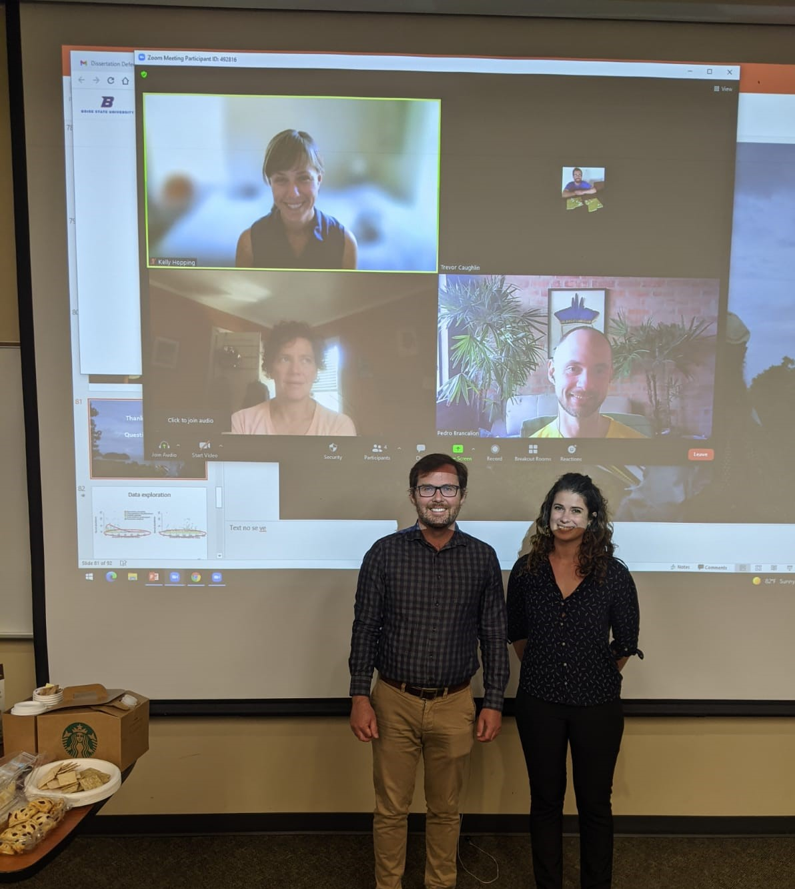
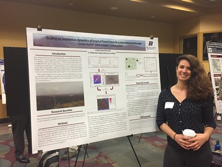

Oral presentations and posters
- Ph.D. dissertation defense, June 24th 2021. Dissertation title: Upscaling tree demography to heterogeneous landscapes using models and remote sensing.
- Presentation at the StanCon 2020 in a selection of 22 presentations. The StanCon is a global event about innovative uses of Stan for Bayesian modeling. Presentation title: Spatial models for plant neighborhood dynamics in Stan.
- Presentation at the ISEC 2020. Presentation title: A Bayesian framework to link remote sensing and field data to predict natural regeneration at the landscape scale.
- Invited speaker and poster at the GEM3 2020 Annual conference. Presentation title: Communicating Science in Spanish to Diverse Audiences.
- Presentation at the US-IALE 2019. Presentation title: Scaling-up restoration: Modelling recruitment from inventory data to thousands of hectares.
- Poster at the Biology Department, Graduate Student Symposium. Presentation title: Scaling up population dynamics of tropical forest trees in a reforesting landscape.

Committee memebers defense picture

Public engagement
- SCIENTIA: Communicating STEM Research in Languages other than English. Team member and co-creator of the Spanish Translation GEM3, an initiative that seeks to increase diversity, equity, and inclusivity (DEI) in STEM by sharing research findings with a broader Spanish-speaking audience.
- 3 Minutes Thesis competition at Boise State 2020 - 3rd price.
- Invited speaker at the Summer Research Community (SRC) Ten Talks Session 2020 at Boise State University. Presentation title: Predicting on behalf of cost-efficiency.